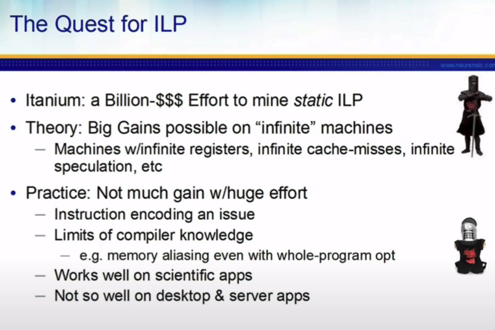
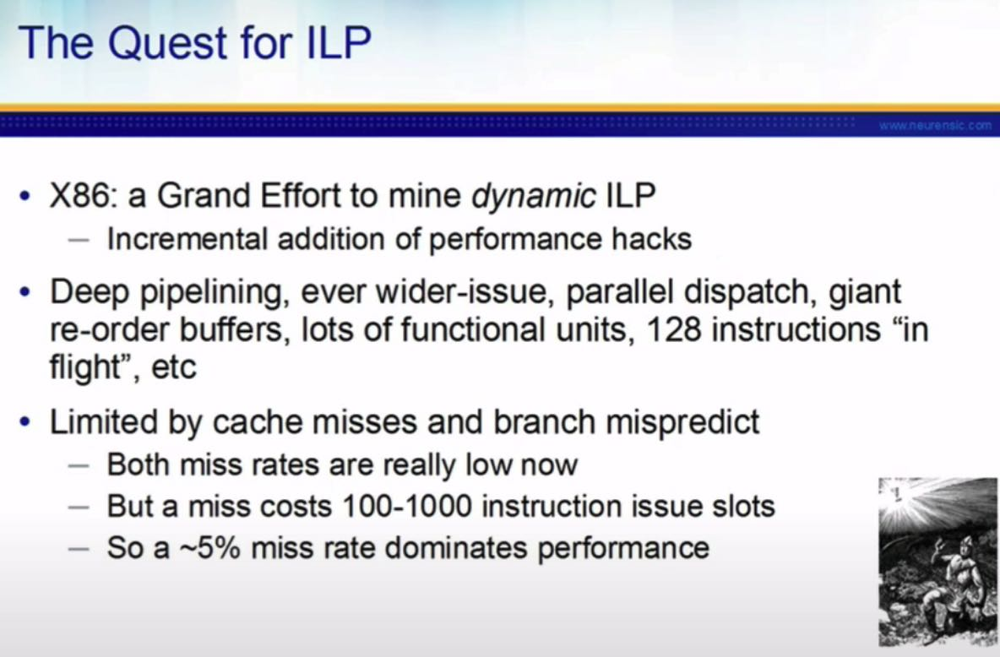
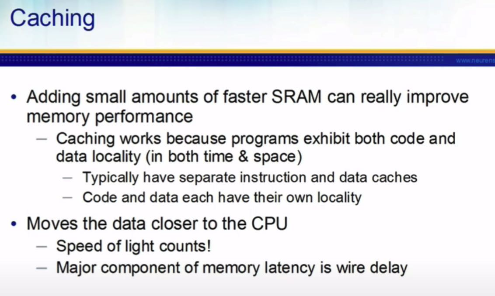
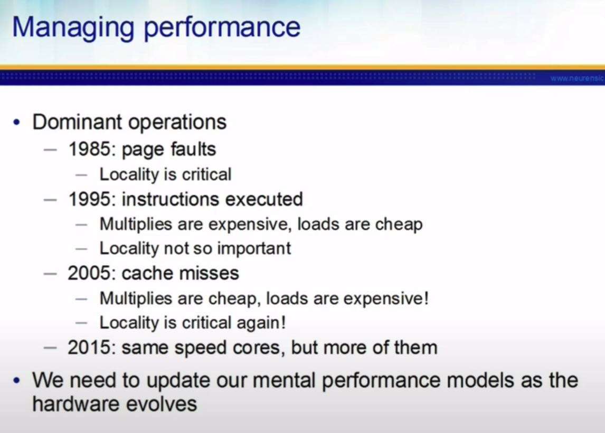
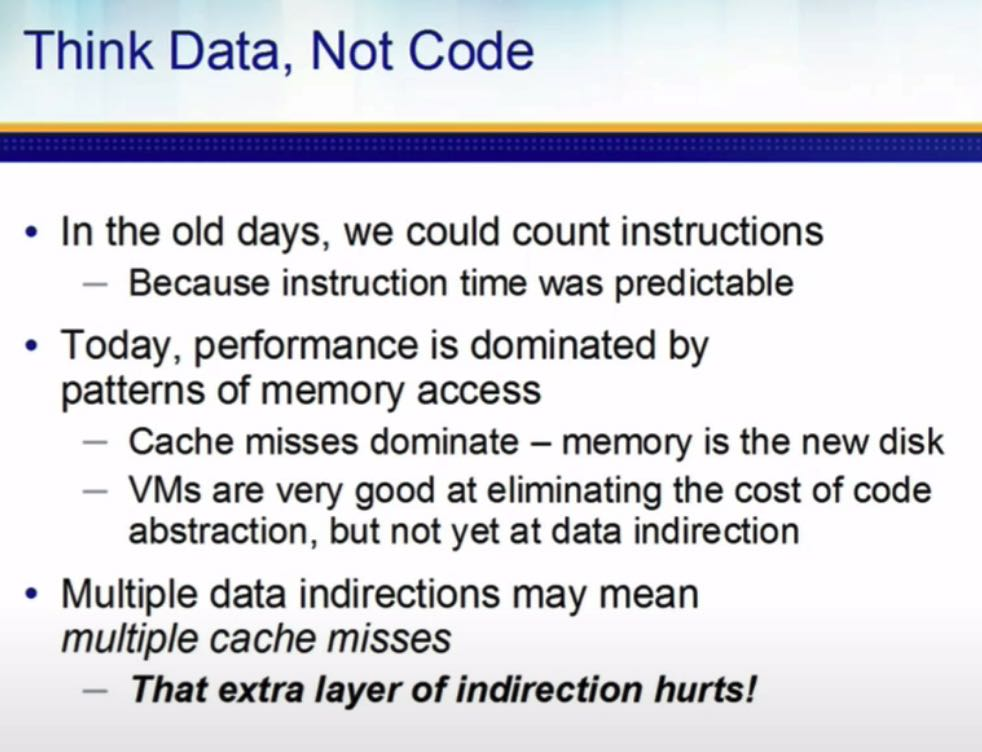
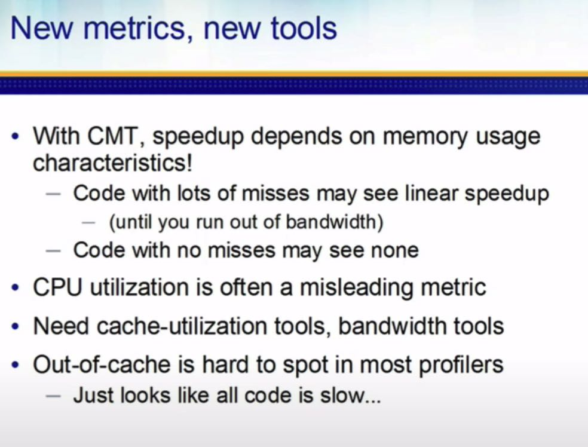

A Crash Course in Modern Hardware by Cliff Click
https://www.youtube.com/watch?v=OFgxAFdxYAQ
GeeCON 2018: Cliff Click - A Crash Course in Modern Hardware - YouTube https://www.youtube.com/watch?v=5ZOuCuGrw48
重新回顾了一下现代硬件尤其是CPU的特性，对我来新东西不是很多，CC是个大神各种东西都是信手拈来的感觉。另外一个youtube版本在结尾还增加了Spectre & Meltdown内容。
历史上Itanium尝试过优化静态ILP(instruction-level parallelism) 配合大量的寄存器/Cache/预测(whats infinite cache-misses?)，但是实际效果并不是很好，我理解主要还是编译器没有跟上，也可能是应用程序上的代码就没有太多的静态ILP可能性。之后x86继续使用dynamic ILP的方法，增加流水，加大宽度，OOO等等，这些东西上去之后单核的性能上来了，但是这个方法始终有天花板。


增加少量的SRAM就可以收到奇效， 记得把inst/data分开，L1(~2-3cycles)/L2(~10cycles)延迟主要取决于和CPU之间的距离以及光速。

早期性能优化在于减少Page fault包括指令和数据，随着内存不断变大开始逐渐优化指令执行速度，等待memory latency和cpu latency差距越来越大，cache miss越来越重要的时候，data/inst locality又开始重新成为关键。

Code的确也没啥考虑的，主要是考虑Data尤其是data layout/memory layout. pointer越多cache miss就越多，性能通常也就越差。

CMT(chip multi-threading)应该是指超线程的意思吧？如果memory bandwidth不是瓶颈的话，那么CMT也可能还有用，如果data layout足够好的话，估计就没有什么用了。现在profiling工具只看cpu-utialization是没有啥用的，如果cpu很高但是IPC很低，那么就需要观察一下cache miss.
